Analiza rješenja · JOI Spring Camp 2020 · Dan 3
Zviježđe 3
O ovom članku
Tekst je prijevod službene japanske prezentacije rješenja, preoblikovan u članak. Slajdovi su ugrađeni kao slike; natpis pod svakim slajdom je prijevod teksta na njemu. Dijelovi označeni kao trenerska napomena nisu u izvornoj prezentaciji — dodani su da popune korake koje slajdovi preskaču ili samo skiciraju.
Slajdovi
Uvod
izvorni slajdovi 1–4
-
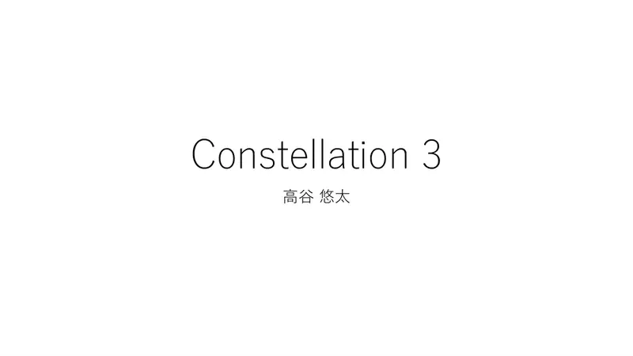
1Naslovni slajd: Constellation 3, analiza: Takaya Yuta. -
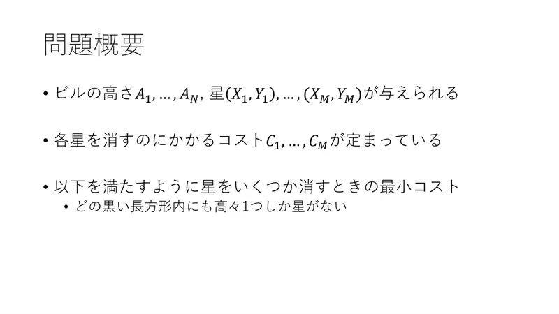
2Sažetak. Zadane visine zgrada $A_1..A_N$, zvijezde $(X_j, Y_j)$ s cijenama uklanjanja $C_j$. Ukloni zvijezde uz minimalnu cijenu tako da svaki crni pravokutnik sadrži najviše jednu zvijezdu. -
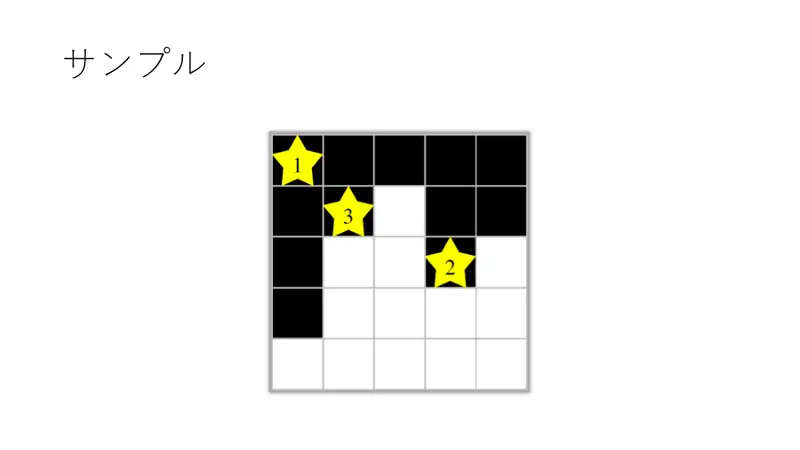
3Primjer: slika s tri zvijezde; dvije od njih dijele crni pravokutnik. -
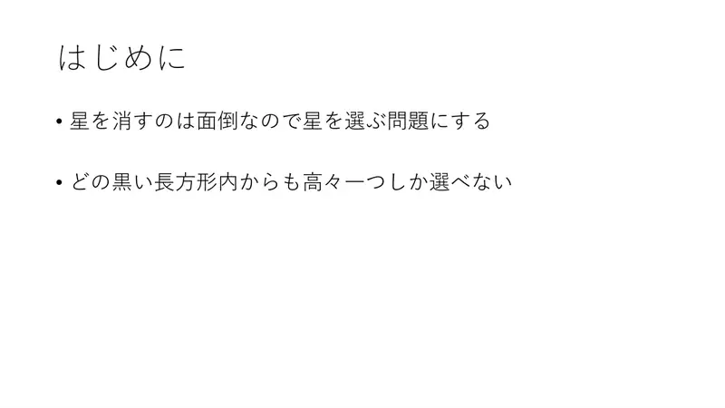
4Za početak: uklanjanje je nezgodno — okrenimo u odabir zvijezda: iz svakog crnog pravokutnika smije se odabrati najviše jedna.
← → tipke ili klik na sliku
Podzadatak 1 14 bodova
Koraci algoritma
DP po intervalima i Kartezijevo stablo
izvorni slajdovi 5–9
-
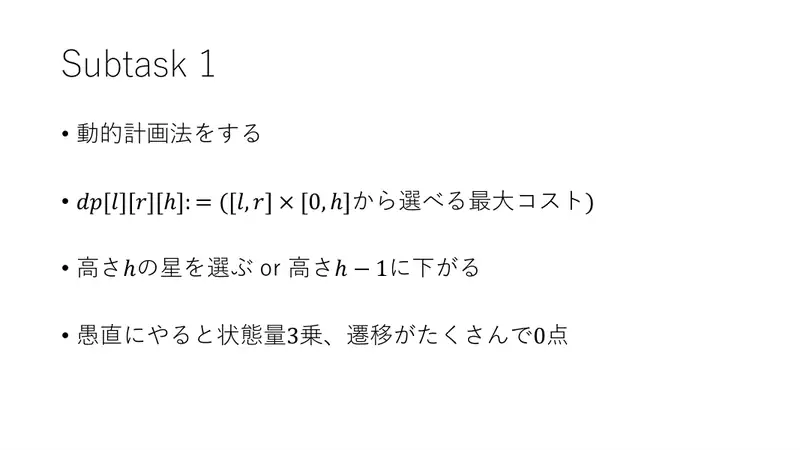
5DP: $\mathrm{dp}[l][r][h]$ = najveći zbroj iz $[l, r] \times [0, h]$. Ili odaberi zvijezdu na visini $h$, ili se spusti na $h-1$. Naivno: kubično stanje, mnoštvo prijelaza — 0 bodova. -
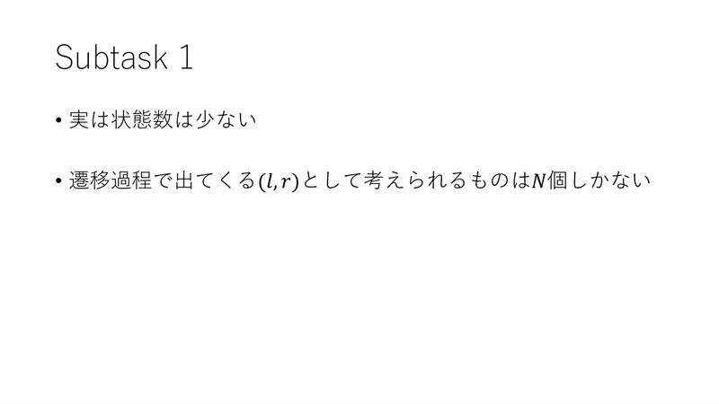
6Ali stanja je zapravo malo: parova $(l, r)$ koji se pojavljuju u prijelazima ima samo $N$. -
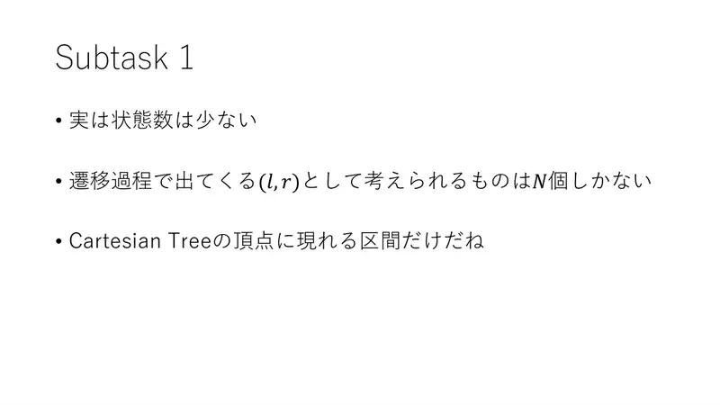
7To su točno intervali čvorova Kartezijevog stabla. -
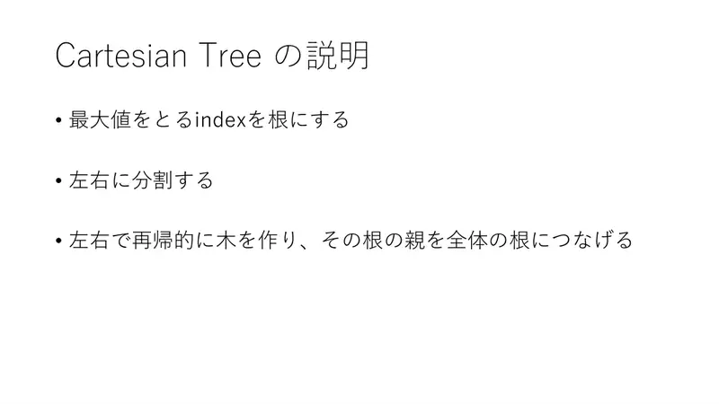
8Kartezijevo stablo: indeks maksimuma je korijen; niz se dijeli na lijevi i desni dio; rekurzivno izgradimo stabla i njihove korijene spojimo na korijen. -
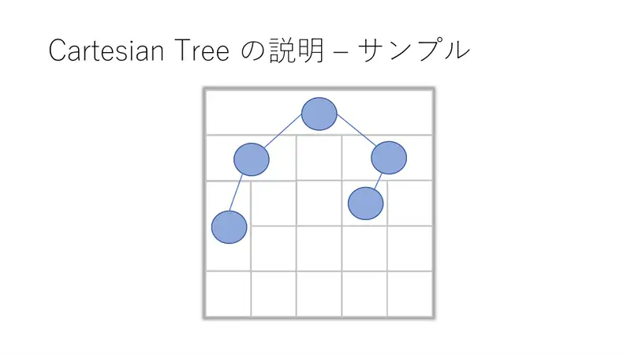
9Kartezijevo stablo primjera.
← → tipke ili klik na sliku
Podzadatak 2 21 bod
Koraci algoritma
Jedna visina po čvoru
izvorni slajdovi 10–12
-
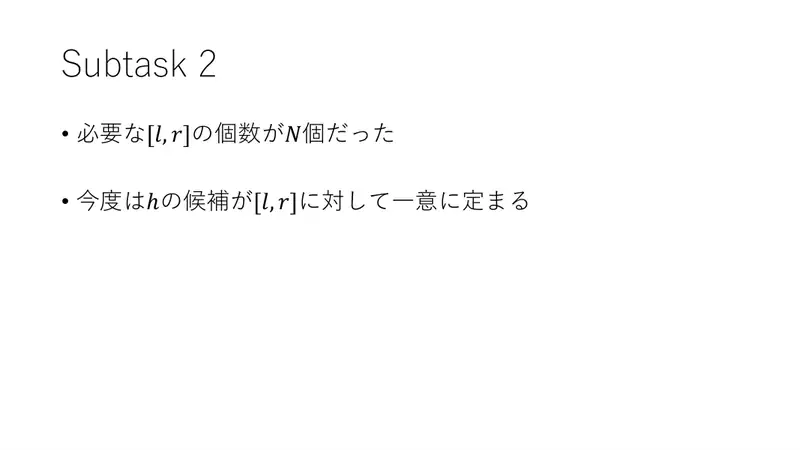
10Potrebnih $[l, r]$ je $N$; sad je i kandidat za $h$ jednoznačan za svaki $[l,r]$. -
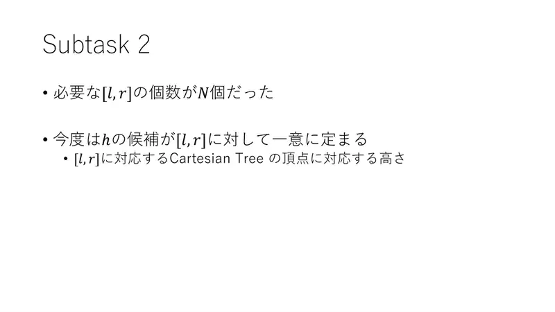
11To je visina koja odgovara čvoru Kartezijevog stabla za $[l, r]$. -
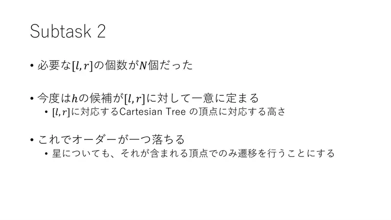
12Time pada jedan red veličine. Zvijezde obrađujemo samo u čvoru koji ih sadrži. $O(NM)$ ili slično za $N, M \le 2000$.
← → tipke ili klik na sliku
Puni bodovi 65 bodova
Koraci algoritma
Zvijezde kao putovi
izvorni slajdovi 13–18
-
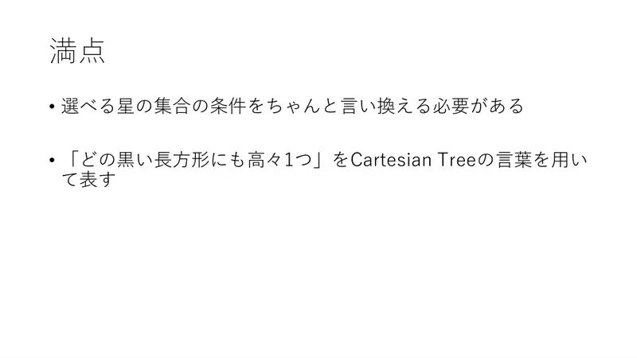
13Treba precizno preformulirati uvjet „najviše jedna po crnom pravokutniku” jezikom Kartezijevog stabla. -
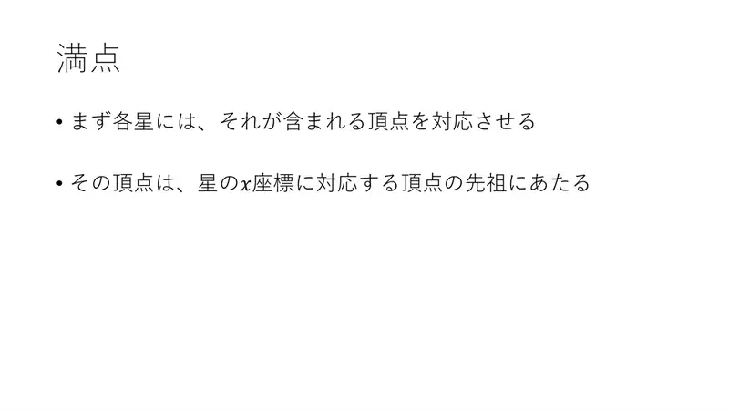
14Svakoj zvijezdi pridružimo čvor koji je sadrži (maksimalni crni interval na njenoj visini). Taj čvor je predak čvora njezine $x$-koordinate. -
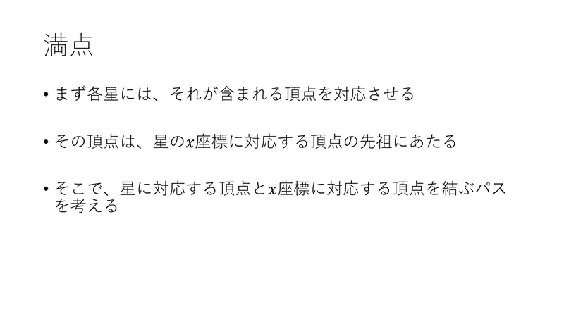
15Promotrimo put od čvora zvijezde do čvora njezine $x$-koordinate. -
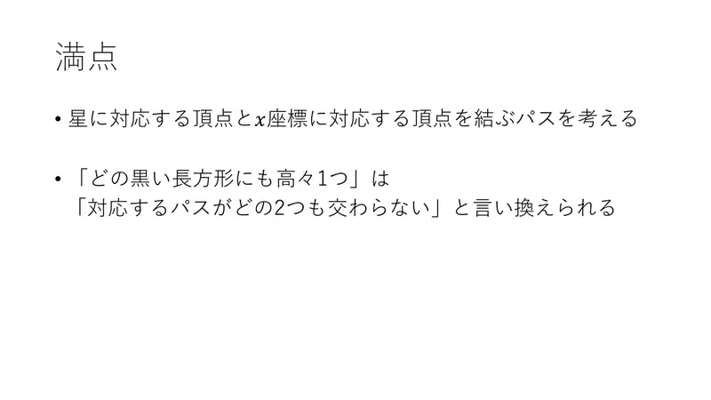
16„Najviše jedna po pravokutniku” $\iff$ „nijedna dva odabrana puta se ne sijeku”. -
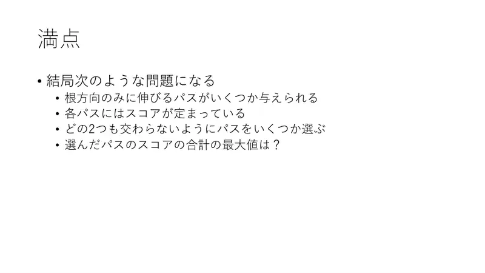
17Dakle: zadani su putovi koji idu samo prema korijenu, svaki s težinom; odaberi međusobno disjunktne putove najvećeg ukupnog zbroja. -
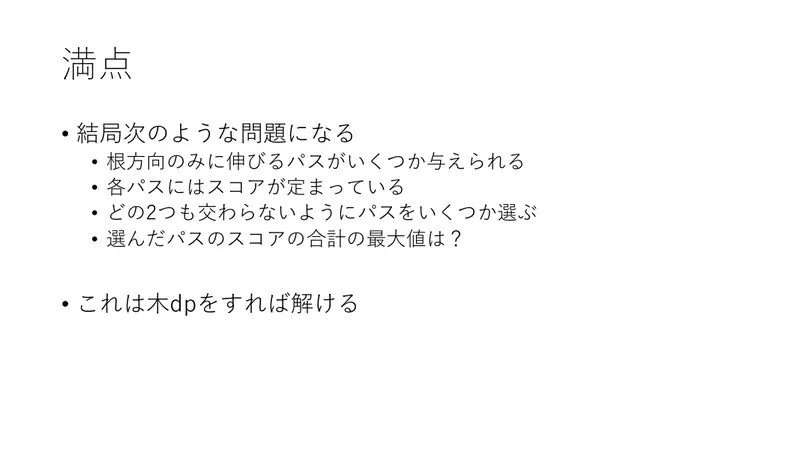
18To se rješava DP-om na stablu.
← → tipke ili klik na sliku
Koraci algoritma
DP na stablu i zbrojevi po putu
izvorni slajdovi 19–23
-
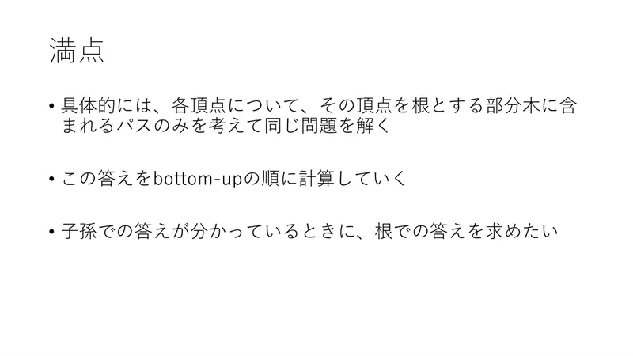
19Za svaki čvor riješimo isti problem za putove unutar njegova podstabla; računamo odozdo prema gore. Znamo odgovore za potomke, želimo odgovor u korijenu podstabla. -
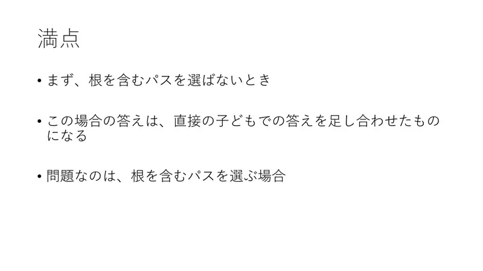
20Ako ne biramo put koji sadrži korijen: zbroj odgovora izravne djece. Problem je slučaj kad biramo put kroz korijen. -
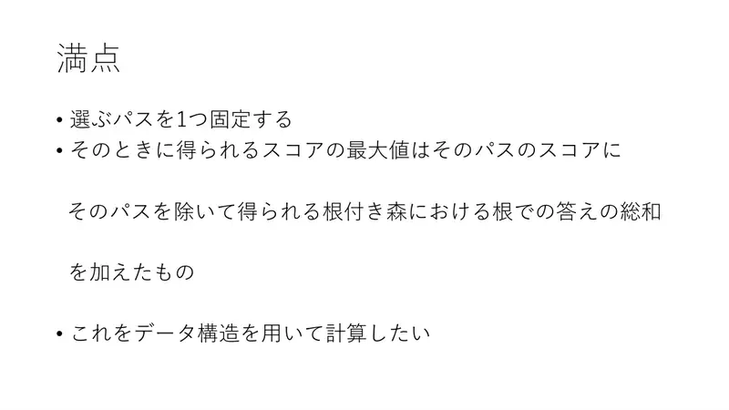
21Fiksiraj odabrani put: rezultat je težina puta + zbroj odgovora korijena šume koja nastane uklanjanjem puta. To želimo računati strukturom podataka. -
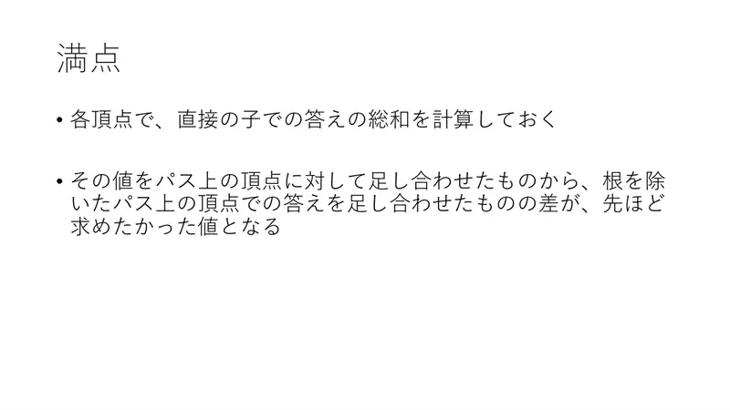
22U svakom čvoru unaprijed izračunaj zbroj odgovora izravne djece. Zbroj tih vrijednosti duž puta minus zbroj odgovora čvorova puta bez korijena = tražena vrijednost. -
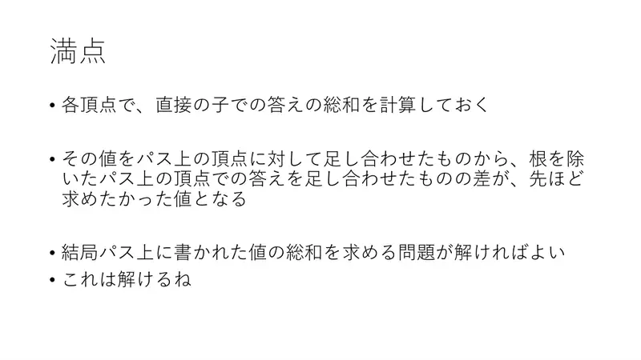
23Ostaje: zbroj vrijednosti zapisanih na čvorovima puta. To znamo.
← → tipke ili klik na sliku
Sažetak
- Minimizacija uklanjanja → maksimizacija zadržanog uz „najviše jedna po crnom pravokutniku”.
- Kartezijevo stablo visina; zvijezda = vertikalni put; sukob $\iff$ putovi se sijeku.
- DP na stablu; zbrojeve po putu daje Fenwick (dodaj na interval stupaca, upit u točki); $O((N+M)\log N)$.